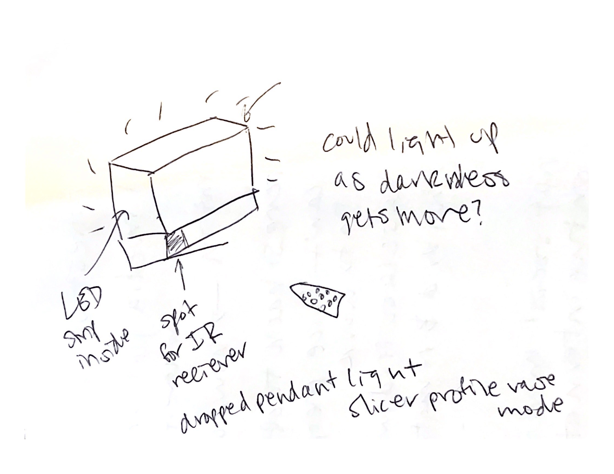
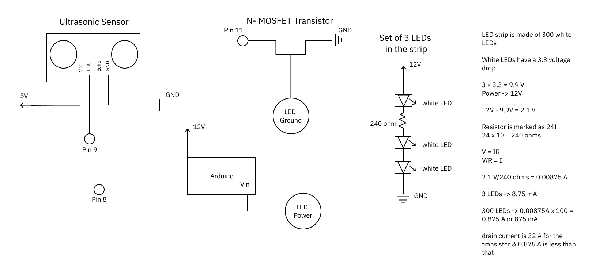
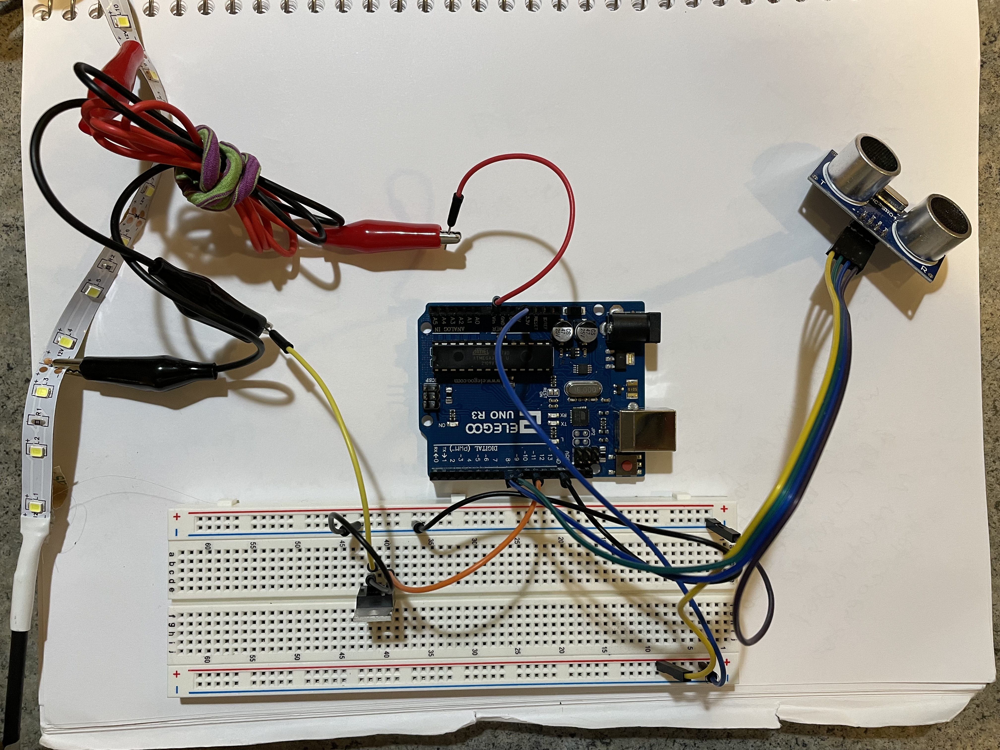
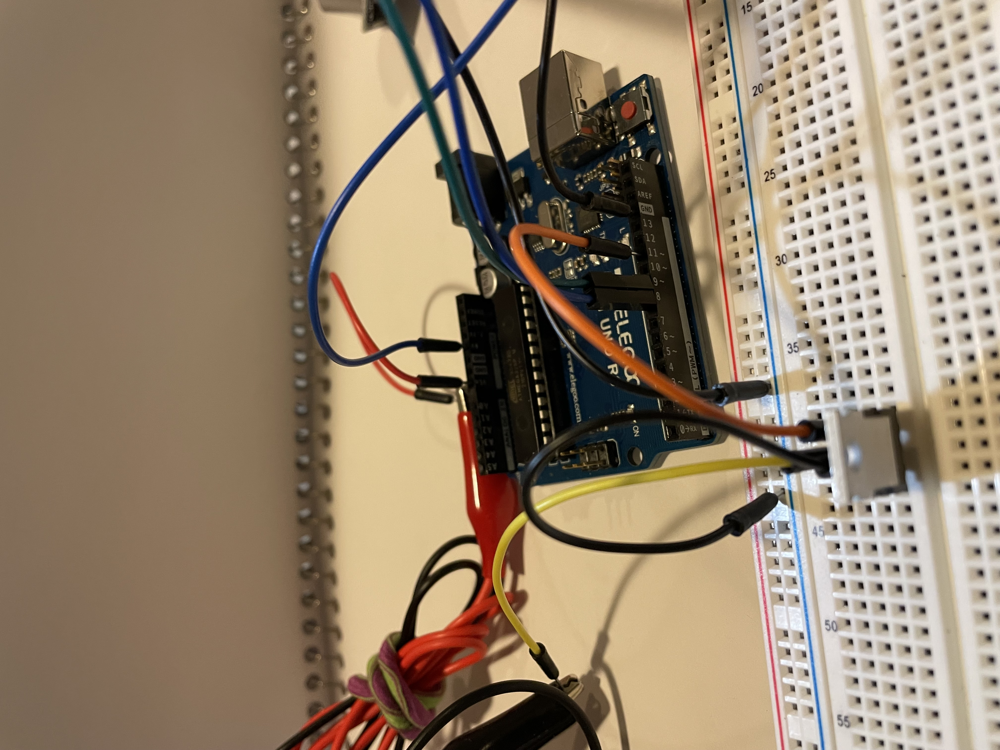
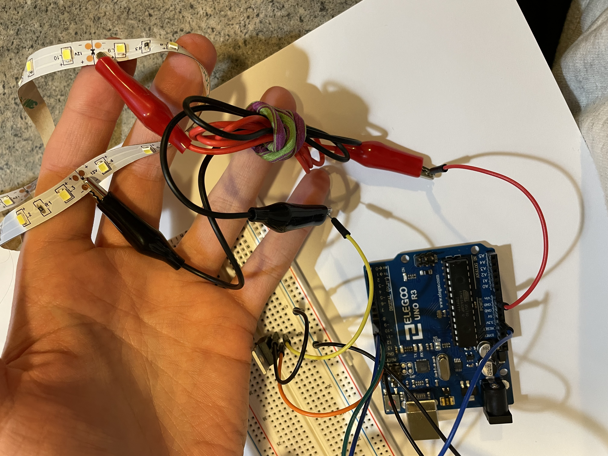
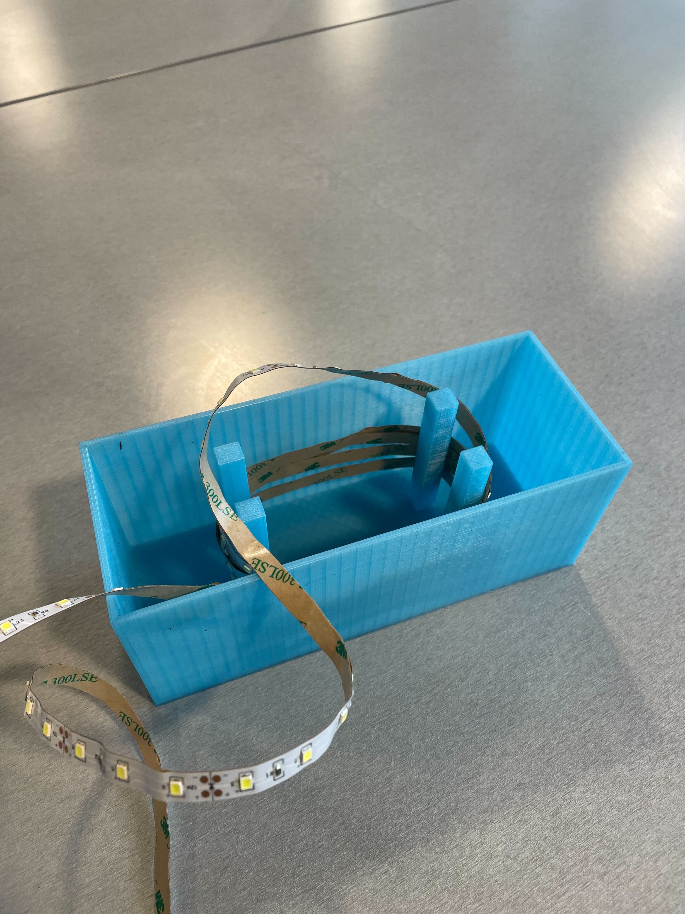
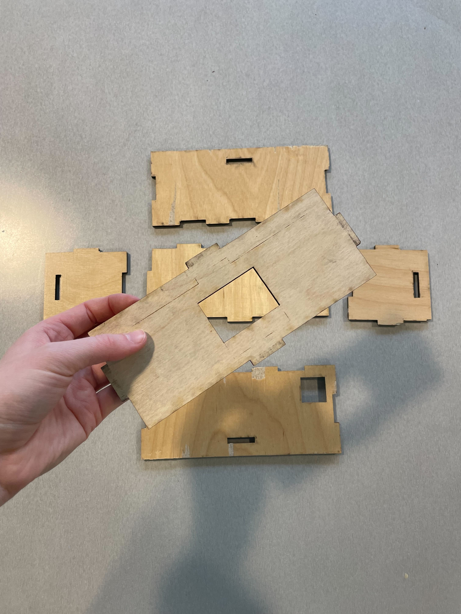
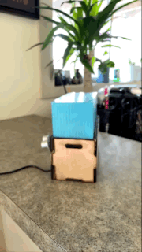
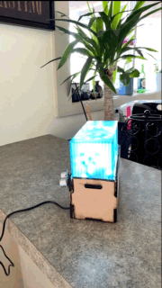

Final Project

My concept for this project was a lamp that would change brightness and would not need to be touched/or switched like a typical lamp. Initially my idea was to have it controlled by a IR reciever and remote, but the fading/timing needed for fading did not work with that piece of hardware. I pivoted instead to use an ultrasonic sensor where the distance of your hand from the lamp would determine the brightness as well as turn it on and off.
Circuit: Schematic and Calculations

Above is the schematic that contains the Ultrasonic sensor, the N-MOSTFET transitor, the arduino and lED strip. The 3 LED schematic is one of 100 on the strip.
  
Above is the circuits that contains the Ultrasonic sensor, the N-MOSTFET transitor, the arduino and lED strip. The 3 LED schematic is one of 100 on the strip.
Casing
I 3D printed the shade with a thickness of 0.1 inches, and pillars for the LEDs to stick to. I also laser cut the box, with a panel in the middle for the lamp to sit on this panel has a hole for the LEDs to come through. The box also has a hole for the power and where the IR reciever was going to go. If I was going to do it again I would cut the hole to fit the ultrasonic sensor inside.
 
Arduino Code
Below is the code that runs the lamp. The lamp turns on/off when hand is within 5 cm of the sensor, when it turns on its at a default 50/255. Once the lamp is on, the brightness can be changed by placing the hand within 30 cm of the sensor, Farther away -> more bright, Closer -> dimmer. 30 cm was chosen based on my own testing, it works as a reasonable distance, too close and the lamp turns off, to far and other things may trigger the lamp. There is also a delay between when the sensor can take a measurement, to prevent abrasive flashing. The distance measurements are also controlled for noise, taking 20 readings & removing the extremely low/high values (lowest 5 and highest 5) then averaging the middle 10.
/*
*
* The array/noise accomodating code was sourced from here:
* https://arduinogetstarted.com/tutorials/arduino-ultrasonic-sensor
*/
#define TRIG_PIN 9 // TRIG pin
#define ECHO_PIN 8 // ECHO pin
float filterArray[20]; // array to store data samples from sensor
float distance; // store the distance from sensor
//minimum sensor distance in cm
int sensorMin = 5;
//max sensor distance in cm
int sensorMax = 30;
//led pin control
int ledPin = 11;
boolean onoff = false;
void setup() {
// begin serial port
Serial.begin (9600);
// configure the trigger and echo pins to output mode
pinMode(TRIG_PIN, OUTPUT);
pinMode(ECHO_PIN, INPUT);
}
void loop() {
// take multiple measurements and store in an array
for (int sample = 0; sample < 20; sample++) {
//get samples using the float method
filterArray[sample] = ultrasonicMeasure();
//wait -- to avoid interferance
delay(30);
}
// put array in ascending order
for (int i = 0; i < 19; i++) {
for (int j = i + 1; j < 20; j++) {
//compare values
if (filterArray[i] > filterArray[j]) {
//place in order
float swap = filterArray[i];
filterArray[i] = filterArray[j];
filterArray[j] = swap;
}
}
}
// 3. FILTERING NOISE
// + the five smallest samples are considered as noise -> ignore it
// + the five biggest samples are considered as noise -> ignore it
// ----------------------------------------------------------------
// => get average of the 10 middle samples (from 5th to 14th)
double sum = 0;
for (int sample = 5; sample < 15; sample++) {
sum += filterArray[sample];
}
distance = sum / 10;
// print the value to Serial Monitor
Serial.print("distance: ");
Serial.print(distance);
Serial.println(" cm");
//if the lamp is in starting position of false(is off) and hand within 5 cm
if (!onoff && distance < sensorMin) {
// fade the LED using the calibrated value:
analogWrite(ledPin, 50);
//wait 5 sec
delay(5000);
//indicate lamp is on
onoff = true;
//if the lamp is on (onoff is true) and hand within 5 cm , turn lamp off
} else if (onoff && distance < sensorMin) {
//turn lamp off
analogWrite(ledPin, 0);
//set onoff to false, indicating lamp is off
onoff = false;
//wait 5 sec
delay(5000);
//if lamp is on and the distance is within range, map the distance value to the
//brightness
} else if (onoff && distance <= sensorMax && distance >= sensorMin) {
//create value for light that maps to distance measurement
int sensorValue = map(distance, sensorMin, sensorMax, 0, 255);
//change brightness
analogWrite(ledPin, sensorValue);
//wait 2 seconds
delay(2000);
}
}
//method to use get distance measurements to be put in the array above
float ultrasonicMeasure() {
// generate 10-microsecond pulse to TRIG pin
digitalWrite(TRIG_PIN, HIGH);
delayMicroseconds(10);
digitalWrite(TRIG_PIN, LOW);
// measure duration of pulse from ECHO pin
float duration_us = pulseIn(ECHO_PIN, HIGH);
// calculate the distance
float distance_cm = 0.017 * duration_us;
return distance_cm;
}
Final Functionality
This is what the lamp looks like fully assembled, the front and back. The back being where the sensor and power source come out.
.jpeg)
.jpeg)
Below is the final operation, the lamp turning on with hand within 5 cm.

Below is the final operation, the lamp changing brightness with hand's distance changing

Last here is the full video showing all the functionalities together, on/off and changing brightness:
The link is found here: https://youtu.be/3HYRkHAMx3Y